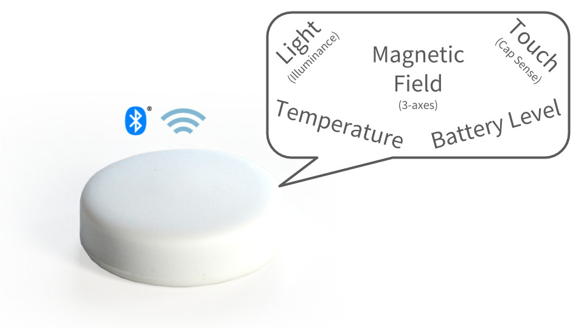
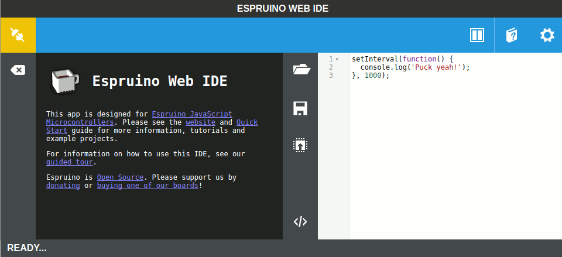
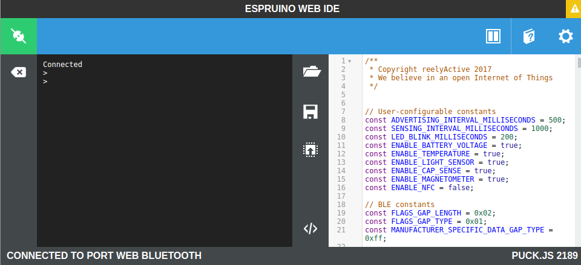
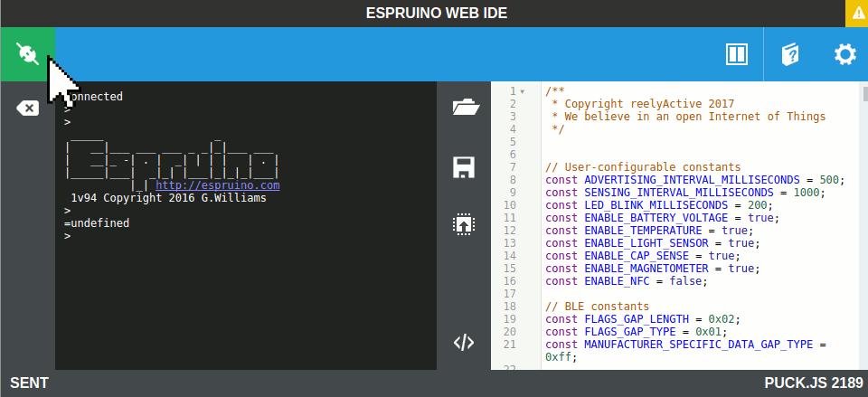
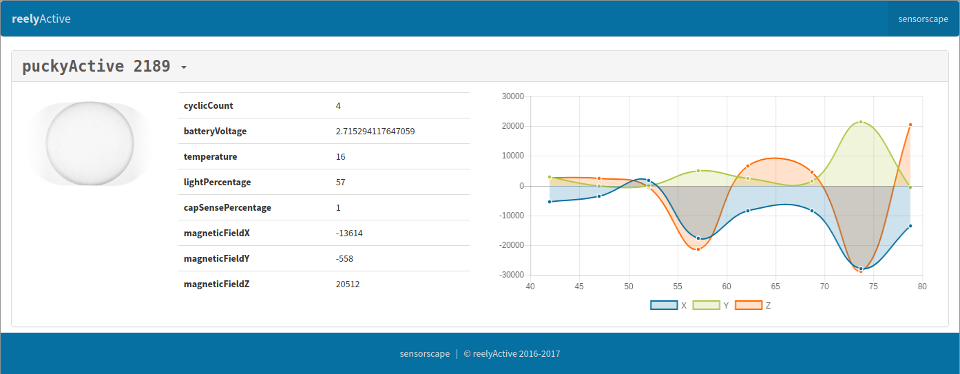

Program a Puck.js with puckyActive
To enjoy reelyActive's open source demos and applications
There's an updated version of this tutorial!
While the tutorial below is still valid, we recommend instead following our updated tutorial:
-

Puck.js Development Guide
Discover and develop Puck.js applications for context-aware physical spaces using Espruino and Bluetooth Low Energy.
The Puck.js is a versatile Bluetooth Low Energy beacon that can be programmed to transmit real-time readings from its many sensors for the reelyActive platform to detect and interpret. This tutorial provides the steps to program a Puck.js with our puckyActive firmware.
WTP?
What's the Puck? Want the Puck?
Puck.js is an open hardware platform which runs Espruino. That means you can program it in JavaScript (yes JavaScript!), the most popular programming language in the world. And, thanks to the magic of Web Bluetooth, you can program the Puck.js from your web browser (really!).
We have yet to come across a more open and friendly sensor beacon platform for education, art and experimentation by technical and non-technical people alike!

Puck.js can sense light, temperature, touch (cap sense), magnetic fields (in 3-axes) and its own battery level. It's also a big button.
What's puckyActive?
Open source software we developed for Puck.js
We developed easy-to-configure software for the Puck.js which makes it periodically read its sensors and transmit the data in an "advertising" packet. This means that any listening devices in range can receive this packet and interpret the sensor readings. We named this open source software puckyActive.
 Prerequisites: Puck.js and Web Bluetooth
Everything you need to get started
In order to program puckyActive, you'll obviously need a Puck.js, but you'll also need to set up Web Bluetooth if it isn't already. Simply follow the Espruino quick start guide for Puck.js:
Once you've completed the quick start to the point where you're paired with the Puck.js, as shown in the image sequence below, you're ready to program puckyActive!
 Program puckyActive via the Web IDE
It's as simple as copy-paste-click
Our puckyActive software is hosted on our GitHub. If you're familiar with GitHub, you can clone the repo. If not, simply follow the link below to our sensing.js code, and copy it all to the clipboard.
Next, paste the code into the right side of the Espruino Web IDE. Be sure to overwrite any code that was already there! Your Web IDE should look something like this:
Now you're ready to program the Puck.js: click the Send to Espruino button and wait. After a few seconds, the status message should be SENT and you should see no errors in the left side of the Web IDE. The programming sequence should look something like this:

The Puck.js is now programmed, but it won't transmit its sensor data while it is connected to the Web IDE. To disconnect, click the green button at the top-left of the IDE. The disconnect sequence should look something like this:
 Observe the puckyActive data
Our sensorscape interprets and displays puckyActive data
The sensorscape is bundled with our open source software which can easily be installed as an offline demo:
When the Puck.js is running puckyActive, the sensorscape should automatically display the data it is transmitting.
Other puckyActive tools will be available soon!
What's next?
Install our listening software as an offline demo, capture individual packets with our barnowl software, or return to the diyActive home page.
Install an Offline Demo Barnowl Baby Steps Return to diyActive